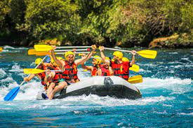
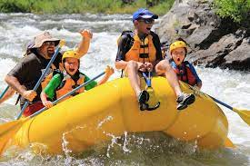
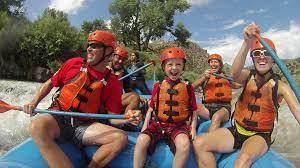

Don't let this opportunity pass you up. Rafting Momentum has hand crafted numerous course options to allow for fun for all. With so many diffrent age groups and course options avaliable, we provide fun for the whole family. Our course can serve as a fun family trip, birthday party, or fieldtrip. For specific questions, or to book your trip today, visit our Contact page to fill out a form. Please feel free to also email/call about any inquries you may have. We hope to hear from you soon!
Most Popular Trips

Family Trip off Roading: The perfect option for familes with veyring skill levels that allows fun for all both in and outside the boat.

Young Ones: This option is perfect for birthday parties or fieldtrips. This course allows for skill appropriate fun for everyone involved!

Family Trip All Day: this option allows for a day full of fun that includes a picnic, vary rapid levels, and time inside and outside the boat.
Avaliable Trips
Family Trip: Ages 10-50+
This trip is the best option if you are wanting to stay together as a group and have a wide variety of ages. This trip includes rapid level 1-2, this allows for everyone to get a taste of fun. This ride takes about 3 hours and includes a mix of slow pace river and fats paced rapids.
Family Trip off roading: Ages 10-50+
This trip runs the same course as our "Family Trip" options, however it includes an extra 1 1/2 hour of trip time where the boats are pulled to the shore where the family can enjoy some play time with our rope swings and water toys. This trip option in perfect for groups with a wide range in ages that want to experince the rapids but also have some fun out of boat time.
Family Trip All Day: Ages 10-50+
This trip runs the same course as our "Family Trip" option, however the total course time is extended to 6 hours. This trip option includes off boat time where kids can get out and swim, use our rope swing, and play with our water toys. This options also includes a picnic halfway through thaat is provided by our company. This trip option also includes and optional 3rd level rapid for groups with more experinced members that are looking for some extra fun.
Young Ones: Ages 6-10
This trip is perfect for birthday parties or school field trips. This course contains mostly level one rapids and is great for kids with no experince. This trip follows our 3hr set up. While all trips include saftey instruction in the beginning, this trip spend a little more time on the saftey to accomodate the young age of our groups.
Teens: 12-18
This trip is perfect for older kids or kids with some experience. This course includes level 2-3 rapids, with a couple of level 4 rapids sprinkled in depending on the skill level of the group. This cours,e as well as the rest of our courses, can be adapted to the skill level of the other all group. This trip also follows our 3 hr set up.